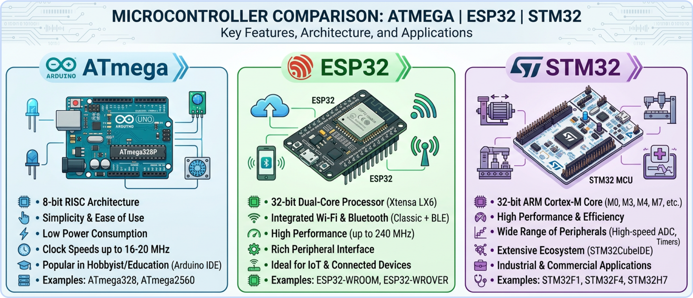

Визначення
Система на кристалі
МК об'єднує CPU, Flash, SRAM та периферійні модулі в одному корпусі — дешево і компактно.
Лабораторна робота №3
Мікроконтролер — інтегральна мікросхема з процесором, пам'яттю та периферією на одному кристалі. Основа вбудованих систем, IoT та робототехніки.

Визначення
МК об'єднує CPU, Flash, SRAM та периферійні модулі в одному корпусі — дешево і компактно.
Відмінність від CPU
На відміну від ПК-процесора, МК не потребує зовнішньої пам'яті або чіпсета.
Програмування
Код компілюється і записується у Flash-пам'ять через програматор або USB-завантажувач.
Застосування
Побутова техніка, автомобілі, медичні пристрої, промислова автоматика, розумний дім.